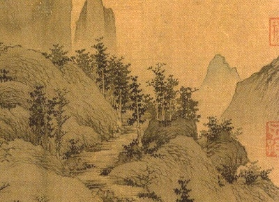

|  | More Translations from the Chineseby Arthur Waley[1919] |
This is not really a sequel to One Hundred and Seventy Chinese Poems [1916], Waley's first book. This, his second work, which stands by itself, includes such famous poets as Ch'u Yüan, Wang Wei, Li Po, Po Chü-i and others. Arthur Waley, a life-long Londoner, was one of the leading Chinese scholars of the 20th century. He was close to the Bloomsbury group, lectured at the School of Oriental and African Studies, and was known for his numerous translations of such works as the Tale of Genji, the Pillow Book of Sei Shonagon, and Monkey (Journey to the West).
Title Page
Contents
Introduction
Ch‘u Yüan
The Great SummonsWang Wei
Prose LetterLi Po
Drinking Alone by MoonlightIn the Mountains on a Summer Day
Waking From Drunkenness on a Spring day
Self-Abandonment
To Tan Ch‘u
Clearing at Dawn
Po Chü-i
Life of Po Chü-iAfter Passing the Examination
Escorting Candidates to the Examination Hall
In Early Summer Lodging in a Temple to Enjoy the Midnight
Sick Leave
Watching the Reapers
Going Alone to Spend a Night at the Hsien-Yu Temple
Planting Bamboos
To Li Chien
At the End of Spring
The Poem on the Wall
Chu Ch‘ēn Village
Fishing in the Wei River
Lazy Man's Song
Illness and Idleness
Winter Night
The Chrysanthemums in the Eastern Garden
Poems in Depression at Wei Village
To His Brother Hsing-Chien, Who Was Serving in Tung Ch‘uan
Starting Early From the Ch‘u-Ch‘ēng Inn
Rain
The Beginning of Summer
Visiting the Hsi-Lin Temple
Prose Letter to Yüan Chēn
Hearing the Early Oriole
Dreaming That I Went With Lu and Yu to Visit Yüan Chēn
The Fifteenth Volume
Invitation to Hsiao Chü-Shih
To Li Chien
The Spring River
After Collecting the Autumn Taxes
Lodging With the Old Man of the Stream
To His Brother Hsing-Chien
The Pine Trees in the Courtyard
Sleeping on Horseback
Parting From the Winter Stove
Good-Bye to the People of Hangchow
Written When Governor of Soochow
Getting Up Early on a Spring Morning
Losing A Slave Girl
The Grand Houses at Lo-Yang
The Cranes
On His Baldness
Thinking of the Past
A Mad Poem Addressed to my Nephews and Nieces
Old Age
To a Talkative Guest
To Liu Yu-Hsi
My Servant Wakes Me
Since I Lay Ill
Song of Past Feelings (With Preface)
Illness
Resignation
Yüan Chen
The Story of Ts‘ui Ying-YingThe Pitcher
Po Hsing-Chien
The Story of Miss LiWang Chien
Hearing That His Friend Was Coming Back From the WarThe South
Ou-Yang Hsiu
AutumnAppendix